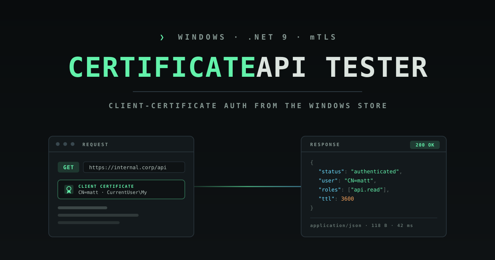
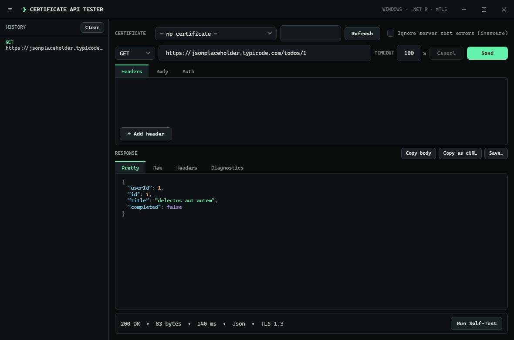

A Windows desktop API tester that authenticates to endpoints with a client certificate from your Windows certificate store — and renders whatever they return, even when you don't know the format.
❯ SELF-CONTAINED EXE · NO INSTALL · NO ADMIN

❯ THE PROBLEM
Some internal sites don't take a password — they ask your browser to choose a certificate and complete a mutual-TLS handshake. Most API clients want that certificate and its private key as files on disk, which enterprise and smart-card certificates deliberately don't allow. Certificate API Tester pulls the certificate straight from your Windows store and lets Windows sign the handshake, so the private key never has to leave — and never has to be exportable. The certificate is optional, so it also works as a general-purpose API client.
❯ WHAT IT DOES
Pick a client certificate from CurrentUser\My with subject, issuer, thumbprint, expiry, and a filter box. Non-exportable and smart-card keys work — Windows signs the handshake.
Leave it on “no certificate” to send an ordinary request. It doubles as a general API tester for endpoints that don't require mutual TLS.
Any method, a key-value headers grid, Bearer/Basic auth helpers, a body with a content-type selector, a timeout, and a Cancel button.
Pretty-prints JSON and XML with syntax highlighting, shows HTML/text, hex-dumps binary, and sniffs the body when the content type is missing or lying.
See the negotiated TLS version and cipher, whether your client cert was actually presented, and the server's certificate and chain.
A sidebar of recent requests you can click to reload in full. The app also remembers your window, last certificate, and settings.
Copy the response body, copy the request as a cURL command, and save any response with a sensible file extension.
Tells “certificate refused” apart from “server not trusted”, a network error, and a timeout — with an off-by-default insecure bypass for private CAs.
Follows the machine's proxy, including WPAD auto-detect and a PAC script from Internet Options, authenticating with your Windows credentials.
One click stands up a local mutual-TLS server and proves the whole certificate path end to end — no real endpoint required.
❯ GET IT
Grab ApiTester.App.exe from the latest release and double-click it. No install, no admin — copy it anywhere and run it.
dotnet build
dotnet test --filter "Category!=StoreRoundTrip"
dotnet run --project src/ApiTester.App
# portable exe:
dotnet publish src/ApiTester.App -c Release \
-r win-x64 --self-contained -o publish❯ KEYBOARD
| Ctrl+Enter / Enter in URL | Send the request |
| Esc | Cancel an in-flight request |
| Ctrl+L | Focus the URL box |
| Ctrl+S | Save the response |
| Ctrl+H | Toggle the history sidebar |
| F5 | Refresh the certificate list |
❯ NO DEPENDENCIES
The released executable bundles the .NET runtime, so running it is just copying one file to any Windows 10/11 machine — no installer, no admin rights, and nothing to install first. To build it on your own infrastructure, the repository ships a .gitlab-ci.yml for a self-hosted GitLab that builds, tests, and packages the executable on a Windows runner and can publish this documentation site to GitLab Pages.
❯ UNDER THE HOOD
The app builds an HttpClient over a SocketsHttpHandler and attaches your chosen certificate. During the handshake the server requests a client certificate and the app presents yours; for non-exportable keys the signing is done by Windows, so the app never sees the raw key.
For direct connections the app performs the TLS handshake itself, so it can report the negotiated protocol and cipher and whether your certificate was actually presented. The server certificate and chain are always captured.
The self-test generates an in-memory CA plus a server and client certificate, runs a local server that requires a client certificate, and drives a real request through the same code path used for live endpoints.
Requests follow the machine's configured proxy — WPAD auto-detect and a PAC script from Internet Options — and authenticate to it with your Windows credentials when the proxy requires it.